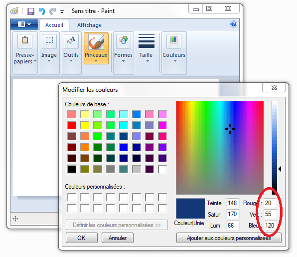

Si vous lisez ceci, c'est peut-être que vous connaissez le langage Python, mais que vous vous demandez comment rendre vos jeux plus accessibles, plus ergonomiques et plus jolis. :-° C'est peut-être aussi parce que vous venez de terminer le tutoriel du Site du Zéro sur le langage Python, écrit par prolixe et 6pri1, et que vous cherchez comment aller plus loin avec ce langage !
Dans tout les cas, vous êtes ici, et vous souhaitez découvrir Pygame, une bibliothèque qui permet de créer une interface graphique avec Python !
Utilise SDL, disponible dans beaucoup de langages...
Exemples de jeux développés grâce à Pygame :
Pour bien comprendre ce tutoriel, je vous conseille d'avoir lu et maîtriser les techniques de programmation du tutoriel de prolixe et 6pri1. Bien que toutes les parties ne soient pas indispensables, plus vous serez à l'aise avec Python, mieux ça sera ! :D
Salut à tous ! :) Si vous lisez ceci, ça y est, vous ne pouvez plus échapper à Pygame ! :diable:
Après Python, vous vous attaquez à une des nombreuses bibliothèques disponibles pour ce langage ! Pour comprendre ce tutoriel et utiliser cette bibliothèque, vous devez avoir déjà quelques programmes Python en mode console derrière vous, et être familier avec les techniques de programmation. Je ne peux que vous conseiller, si durant la lecture vous butez sur une ligne de code ou pour vous rafraîchir la mémoire, de jeter un oeil sur le tutoriel Python du Site du Zéro ! :)
Bon, on commence ? :-° Je vous propose tout d'abord de regarder Pygame de plus près, et de faire le point sur le rôle d'une interface graphique, pour un langage comme Python ! Nous verrons un peu plus loin comment l'installer sur votre machine et comment l'utiliser dans votre code !
L'histoire de Pygame commence en l'an 2000, lorsque Pete Shinners découvre Python et SDL. Python, j'espère que vous avez une idée de ce dont il peut s'agir :lol: , SDL parcontre, c'est moins sûr ! Si vous avez suivi le cours de Matéo sur le C, vous en aurez déjà entendu parler, et l'aurez même utilisée...
SDL, pour Simple Directmedia Library, est une bibliothèque libre multi-plateformes permettant la gestion du multimédia dans la programmation. La SDL est écrite en C, mais est utilisable avec un grand nombre de langages, comme le ... C/C++ :-° , Pascal, Perl ou encore ... Python !
Parmis ses utilisations, on peut retenir :
L'affichage vidéo 2D
La gestion de l'audio
La gestion de périphériques de commandes (clavier, souris...)
Et vous en conviendrez, pour coder un jeu, ça sert pas mal ! Je vous laisse imaginer tous les jeux que vous allez pouvoir créer avec tout ça... :) Tetris, Super Mario Bros, Pokémon (eh oui ! :lol: ), Zelda... Je parle des versions 2D, n'allez pas me chercher votre dernier Zelda Wii !
Revenons à notre cher Pete, qui, lorsqu'il a découvert Python et SDL, s'est dit qu'il serait peut-être bon de combiner les deux. Il voulait ainsi proposer aux codeurs Python une bibliothèque multimédia aussi riche que celle du C, tout en conservant ce qui fait l'âme de Python, la simplicité.
Pygame est donc l'adaptation de la SDL au service de Python, mais est aussi constitué de quelques ajouts et modifications de son auteur. Cette bibliothèque est assez intuitive et constitue un très bon moyen de se lancer dans la programmation graphique avec Python. :)
Il faut savoir que Pygame ne fait pas partie des bibliothèques standards de Python, qu'elle est donc développée indépendamment et qu'il est nécessaire de la télécharger et de l'installer en plus de Python pour pouvoir l'utiliser. Celle-ci est gratuite et libre, sous licence GNU LGPL, ça nous arrange !
On peut dire que Pygame est une interface graphique pour Python. Ce terme est assez facile à comprendre, mais nous allons tout de même voir qu'il y a quelques choses à connaître sur les interfaces graphiques avant de se lancer :)
Ca y est ! Enfin du concret à vous mettre sous la dent ! :lol: L'installation !
Vous devez d'abord télécharger le fichier correspondant à votre système d'exploitation et à votre version de Python sur le site de Pygame. Normalement Python 3.x si vous avez suivi le tutoriel du Site du Zéro. :) Page de téléchargement : http://www.pygame.org/download.shtml
Pour Windows
Choisissez le fichier qui vous correspond dans la liste "Windows", qui devrait ressembler à celà :
Cette section nous indique qu'il est nécessaire de désinstaller toutes les versions précédentes de Pygame, avant d'en installer une nouvelle, pas de problème normalement ! :)
Le fichier qui nous intéresse est donc ici celui compatible avec Python 3, soit le dernier de la liste. :) Téléchargez le fichier msi qui contient tout ce dont vous avez besoin pour coder avec Pygame, et lancez-le !
Lors de l'installation, vous rencontrerez une fenêtre comme celle-ci :
Pygame devrait repérer Python sur votre machine (Python 3.1 from registry sur l'image). Si ce n'est pas le cas, vous aurez seulement la seconde ligne, précisez alors le répertoire d'installation de Python sur votre machine, et le tour est joué ! :D
Une fois installé sur votre machine, vous êtes prêt à travailler ! :D Pour vérifier que l'installation a bien été effectuée, vous pouvez vous rendre dans l'interpréteur Python et taper :
import pygame
Si vous ne rencontrez aucune erreur, Pygame est installé !
Pour Linux
Je vais guider l'installation par les sources, mais vous êtes libre, si vous le souhaitez, d'installer le paquet de votre distribution, avec votre gestionnaire qui gérera les dépendances... :)
La section de la page qui nous intéresse est celle-ci :
Vous pouvez télécharger l'une ou l'autre des archives, cela revient exactement au même ! :)
Téléchargez le fichier contenant les sources et décompressez-le. Avant l'installation, assurez-vous d'avoir installé les dépendances : libsdl1.2debian-all (dépôt Universe), libsdl1.2-dev, libsdl-image1.2, libsdl-image1.2-dev, libsdl-ttf2.0-0, libsdl-ttf2.0-dev, libsdl-mixer1.2, libsdl-mixer1.2-dev, libsmpeg0, libsmpeg0-dev, libpng-dev et libjpeg-dev !
Voici la commande pour les installer sous Ubuntu :
Une fois les dépendances installées, ouvrez un terminal. Rendez-vous dans le dossier décompressé et tapez :
python3 setup.py build
Si vous ne rencontrez aucune erreur, passez en root et tapez :
python3 setup.py install
Et c'est bon ! Vous êtes prêt à travailler avec Pygame ! :D Pour vérifier que l'installation a bien été effectuée, vous pouvez vous rendre dans l'interpréteur Python et taper :
import pygame
Si vous ne rencontrez aucune erreur, Pygame est installé !
Dans la plupart des langages de programmation, on commence par coder des programmes qui se lanceront en mode console. Si vous avez suivi le tutoriel du Site du Zéro sur le Python, c'est votre cas. :D Programmer de cette façon permet d'apprendre tous les aspects du langage sans avoir à se soucier de l'affichage, ni du son. Pas de design, seulement du code, en somme. Un programme en mode console peut être lancé sur un serveur par exemple, où l'on privilégie la performance à une interface graphique qui serait inutile.
Des programmes en mode console et graphique peuvent proposer les mêmes fonctions. En effet, l'interface graphique, c'est seulement une "surcouche" ajoutée au langage, permettant d'afficher des fenêtres, des images ou des boutons par exemple ! :)
Cependant, les modes console et graphique ont chacun leurs avantages et leurs inconvénients. Le principal inconvénient du mode graphique par rapport au mode console est la perte de performance dûe au supplément de calcul pour afficher une fenêtre. Parcontre, son avantage est son intuitivité et la possibilité d'afficher des images, de travailler un design, par rapport à un mode console qui nécessite un apprentissage pour l'utilisation, et qui avouont-le n'est pas très attirant...
Qui est le geek qui a dit "Si !" ? :lol:
Exemple, un même programme en mode console, puis graphique :
Différences de conception
Jusqu'à maintenant, vous avez codé des scripts qui s'exécutait au fur et à mesure du fichier. Par exemple :
on demande le nom
on attend l'entrée du nom
on demande l'âge
etc... Vous suivez ? :)
Pour une interface graphique, nous allons voir que c'est différent. En effet, le programme ne "pilote" plus les évènements, mais il est cette fois "piloté" par ceux-ci. Il est en quelque sorte au service de l'utilisateur, là ou le programme textuel guide étape par étape...
Pour que vous compreniez mieux, je vais prendre un exemple. :)
Imaginez un programme affichant un personnage au milieu d'un champs. Vous pouvez appuyer sur Haut, Bas, Gauche et Droite pour le faire bouger, ou encore Echap pour fermer la fenêtre.
Voyons les différentes étapes de l'exécution de ce programme...
Affichage du personnage dans le champs
Attente de la pression d'une touche
Déplacement correspondant
...
Attente de la pression d'une touche
Déplacement correspondant
...
Ce programme doit être codé pour attendre la pression d'une touche, et si cet touche correspond à une touche de mouvement, lancer la fonction précisée pour celui-ci (deplace_haut(), par exemple). Ce programme se lance, puis attend patiemment qu'on lui donne un ordre, et agit différemment selon l'ordre donné !
Cette attente est généralement codée à l'aide d'une boucle, qui s'effectue tant qu'aucun événement ne se produit. C'est une différence qui influe sur la manière de coder lorsqu'on a une interface graphique à gérer, mais ne vous inquiétez pas, c'est plutôt naturel, et on y va doucement ! :D
Ca y est, vous possédez maintenant tous les outils pour créer une fenêtre, la contrôler, afficher des images et jouer des sons en Python ! Reste maintenant à savoir comment utiliser cette bibliothèque, parce que nos jeux ne viendront pas tout seuls ! :D Dans la prochaine partie nous afficheront nos premières fenêtres et essayerons de comprendre la méthode d'affichage de SDL et Pygame !
Si vous êtes ici, c'est que Pygame est installé sur votre machine, et que Python y a accès. :) Dans cette partie, vous verrez (enfin :p ) une fenêtre gérée par Pygame, et nous essaierons de comprendre comment fonctionne l'affichage de la SDL pour ainsi insérer des images dans la fenêtre !
Nous allons maintenant afficher notre première fenêtre, allez, c'est parti !
A partir de maintenant, je pars du principe que Pygame est installé pour Python 3 sur votre machine ! :)
Nous allons voir qu'il y a plusieurs manières d'importer Pygame pour votre programme. Pour savoir comment importer la bibliothèque dans votre code Python, il faut savoir de quoi celle-ci est composée. Après un petit tour sur la documentation Pygame (http://pygame.org/docs), nous pouvons voir que Pygame est en fait composé de plusieurs modules, dont quelques uns des plus importants :
display
mixer
draw
event
image
mouse
time
Les noms des principaux modules sont assez faciles à comprendre. La bibliothèque est "découpées" en plusieurs parties, chacune gérant un système bien précis. Par exemple, le module "display" s'occupe de l'affichage du programme à l'écran, et le module "mixer" se charge de la gestion des sons.
Importation d'un seul module
Voyons maintenant la première manière d'importer Pygame dans votre code. :) Imaginez un programme qui, quand on le lance, se contente de jouer un son. Vous pouvez utiliser Pygame pour celà, mais charger toute la bibliothèque pour jouer un son peut être lourd ! C'est pour celà que l'on peut importer les modules un par un dans le script. Pour jouer un son, nous avons seulement besoin du module "mixer", nous l'importons donc avec :
import pygame.mixer
Vous devez avoir déjà vu l'importation dans le tutoriel Python, je passe donc vite ici... :)
Importation complète
La seconde manière d'importer la bibliothèque est de l'importer en entier, vous devez avoir une idée...
import pygame
Ce code importe tous les modules présents dans la bibliothèque Pygame.
Constantes de Pygame
Il est aussi conseillé d'importer les constantes de Pygame, mais cette fois-ci dans l'espace de votre script :
from pygame.locals import *
Pour y accéder, il faudra taper CONSTANTE, plutôt que pygame.CONSTANTE ! :) Celà vous permettra une meilleure lisibilité dans l'utilisation de ces constantes, vous verrez plus tard à quoi elles serviront :)
Voilà, c'est tout, vous pouvez maintenant vous servir de la bibliothèque Pygame dans votre programme ! Vous voyez, l'importation n'était pas très compliquée ! :lol:
Pour afficher une fenêtre, nous importerons toute la bibliothèque Pygame, car nous utiliserons par la suite des fonctionnalités venant de plusieurs de ses modules. Je vous laisse taper ceci :
import pygame
from pygame.locals import *
Ca y est, on y a accès :) , mais avant de pouvoir faire quoique ce soit avec Pygame, il est nécessaire de l'initialiser. Cette ligne de code initialise tous les modules pour nous :
pygame.init()
Une fois Pygame initialisé, on va se lancer dans la création d'une fenêtre, qui sera vide pour commencer !
Je vous laisse regarder cette ligne de code :
fenetre = pygame.display.set_mode((640, 480))
Maintenant, analysons :
Premièrement, nous déclarons une variable fenêtre
Nous appelons ensuite la fonction set_mode() contenue dans le module "display" de Pygame
Cette fonction prend en paramètre un tuple contenant la largeur et la hauteur de la fenêtre voulue. Attention, c'est un bien un tuple, et non pas deux arguments différents, il est donc nécessaire de mettre les parenthèses !
En fait, cette fonction retourne un objet de classe Surface, définie par Pygame. Cette classe est utilisée par la fenêtre ainsi que par chacune des images affichées dans celle-ci. Pour le moment, cette surface est vierge, elle est donc noire.
Vous devriez donc obtenir une fenêtre comme celle-ci :
Eh, mais si je lance mon script, la fenêtre apparaît et disparaît aussitôt ! o_O
En effet, Pygame affiche la fenêtre, et une fois qu'il a terminé, il considère que le travail est fait et continue le script. :p Vous vous rappelez du chapitre sur les interfaces graphiques ? Je disais que celles-ci devaient produire une boucle qui s'effectuait tant qu'aucun événement ne se produisait.
Pour rester ouverte, la fenêtre a donc besoin d'une boucle infinie, je pense que vous savez faire celà, non ? :)
Voici le code minimal pour l'ouverture d'une fenêtre Pygame :
#Importation des bibliothèques nécessaires
import pygame
from pygame.locals import *
#Initialisation de la bibliothèque Pygame
pygame.init()
#Création de la fenêtre
fenetre = pygame.display.set_mode((640, 480))
#Variable qui continue la boucle si = 1, stoppe si = 0
continuer = 1
#Boucle infinie
while continuer:
continue #Je place continue ici pour pouvoir relancer la boucle infinie
#mais il est d'habitude remplacé par une suite d'instructions
Vous ne devriez pas avoir de difficultés à comprendre ce code :) La boucle infinie se charge simplement de garder le programme ouvert !
Eh mais avec ta boucle infinie je peux pas fermer la fenêtre !
Si vous avez eu cette réaction, vous avez eu raison ! :p Nous verrons plus tard comment utiliser les événements, qui casseront cette boucle (qui donneront la valeur 0 à continuer), pour permettre à l'utilisateur de fermer la fenêtre d'un clic sur le bouton de fermeture, par exemple... Pour l'instant, fermez la fenêtre par un Ctrl+C dans la console sous Linux, ou fermez simplement l'invite de commande qui s'ouvre sous Windows ! :)
Si vous souhaitez pouvoir redimensionner la fenêtre, vous devez utiliser la fonction comme ceci :
On a une fenêtre, mais vide ! Ca vous intéresserait peut-être de la remplir un peu ? Si c'est le cas, on est parti ! :)
Afficher un fond
Nous allons commencer par afficher un beau fond pour cette fenêtre. Si vous avez suivi le tutoriel jusqu'à maintenant, vous avez besoin d'un fond de 640 par 480 pixels.
Allez, en voici un, c'est cadeau ! :)
background.jpg
Enregistrez cette image et placez-la dans le répertoire de votre script Python.
Nous allons maintenant voir comment l'afficher dans notre fenêtre. Avant de l'afficher, il faut charger l'image :
fond = pygame.image.load("background.jpg")
Ca y est, on peut maintenant accéder à l'image par la variable fond. La fonction load() retourne une Surface, contenant l'image voulue. Cependant, elle a gardé le format de pixels de l'image source, qui peut différer de celui utilisé par Pygame, ou par les autres images de votre programme ! Pour régler ce problème, nous utilisons la fonction convert(), qui vient tout de suite après load(). Grâce à cette ligne, votre image sera chargée et convertie au bon format, ce qui rendra l'affichage plus rapide ! :)
Python n'aura plus à convertir l'image à chaque affichage ! Je vous conseille de faire ceci avec toutes vos images !
Maintenant, nous avons tout ce qu'il faut pour l'afficher dans cette fenêtre ! :p
Le principe d'affichage de la SDL est à connaître pour bien afficher ses images : fenetre est une surface vide, sur laquelle on va "coller", ou "empiler" les autres images. Le fond doit donc être empilé sur la surface vide de la fenêtre.
Voyons voir comment faire :
fenetre.blit(fond, (0,0))
Analysons ce code :
Nous utilisons la méthode blit() de la surface fenetre, à laquelle nous envoyons deux paramètres.
1er paramètre : l'image à coller.
2nd paramètre : le tuple contenant l'abscisse et l'ordonnée du point de collage (coin en haut à gauche de l'image)
Ce code peut se résumer par : "colle l'image fond en haut à gauche de l'image fenetre." ou encore : "sur l'image fenetre, colle l'image fond, en commençant au coin en haut à gauche."
Voilà un petit exemple pour mieux comprendre, une fenêtre contenant des images, ainsi que le tuple de coordonnées de leur point haut-gauche :
J'ai essayé de lancer le code, la fenêtre est toujours noire, pourquoi ?
Très bonne question ! :lol: Il faut savoir que quand on "colle" une image, celle-ci n'apparait pas sur l'écran qu'on avait avant de la coller. En effet, il faut "mettre à jour", ou "rafraîchir" l'écran pour voir les changements effectués depuis le dernier rafraîchissement !
Voilà la ligne qui permettra le rafraîchissement :
pygame.display.flip()
Ce code met à jour la fenêtre Pygame entière, et tadaaaaaam, votre image apparaît ! :D
Voici donc le code complet pour afficher un fond dans une fenêtre Pygame :
import pygame
from pygame.locals import *
pygame.init()
#Ouverture de la fenêtre Pygame
fenetre = pygame.display.set_mode((640, 480))
#Chargement et collage du fond
fond = pygame.image.load("background.jpg").convert()
fenetre.blit(fond, (0,0))
#Rafraîchissement de l'écran
pygame.display.flip()
#BOUCLE INFINIE
continuer = 1
while continuer:
continuer = int(input())
Afficher un personnage
Maintenant que nous avons un fond, j'aimerais que vous me donniez le code permettant d'afficher le fond, et ce personnage aux cordonnées x = 200 et y = 300 !
import pygame
from pygame.locals import *
pygame.init()
#Ouverture de la fenêtre Pygame
fenetre = pygame.display.set_mode((640, 480))
#Chargement et collage du fond
fond = pygame.image.load("background.jpg").convert()
fenetre.blit(fond, (0,0))
#Chargement et collage du personnage
perso = pygame.image.load("perso.png").convert()
fenetre.blit(perso, (200,300))
#Rafraîchissement de l'écran
pygame.display.flip()
#BOUCLE INFINIE
continuer = 1
while continuer:
continuer = int(input())
Ce code vous permet d'obtenir une fenêtre comme celle-ci :
J'espère que vous y êtes arrivé, ce n'était pas très difficile ! Ici vous pouvez voir que les images s'empilent les unes au dessus des autres. Le personnage s'est ainsi "empilé" sur l'image de fond, car il a été collé après ! :)
Gestion de la transparence
Mais attend ? C'est quoi ça ? La zone transparente est devenue noire !
Bien vu ! :lol: , pour régler cela, utilisez convert_alpha() au lieu de convert() pour les images à transparence !
Si vous souhaitez utiliser une image sans transparence, mais rendre la couleur de fond transparente, vous pouvez utiliser cette la méthode de Surface set_colorkey(), qui prend en paramètre une valeur RGB (Red, Green, Blue), dont les valeurs vont de 0 à 255 :
image.set_colorkey((255,255,255)) #Rend le blanc (valeur RGB : 255,255,255) de l'image transparent
Vous pouvez retrouver ces valeurs pour n'importe quelle couleur grâce à GIMP, Photoshop, ou même Paint, grâce à l'outils de sélection de couleur ! Voilà l'exemple avec Paint :

C'est fait, vous êtes maintenant capable d'affichez n'importe quelle fenêtre, contenant n'importe quelle image ! :p
Vous pouvez être fier, vous avez affiché votre première fenêtre Pygame, et vos premières images ! :p N'hésitez pas à vous entraîner, et à insérer d'autres images, à d'autres endroits, à les empiler les unes sur les autres pour familiariser avec ce concept !
Dans la prochaine partie, nous rendrons notre programme un peu plus interactif grâce aux événements ! :D Nous rentrons maintenant dans le vif du sujet de la programmation de jeu en Python !
Pour commencer cette partie sur la gestion des événements, je poserai la question :
Qu'est-ce qu'un événement ?
Un événement peut prendre plusieurs formes, il peut être amené par la pression ou le relâchement d'une touche du clavier, ou encore d'un bouton de la souris, un mouvement de la souris, du joystick, etc... Mais il peut aussi être un déplacement ou un redimensionnement de la fênetre !
Un événement est donc tout ce que le programme peut "capter", de la part de l'utilisateur. :)
Nous allons dans cette partie apprendre à capturer tous ces événements et à attribuer à chacun d'eux une action bien précise ! C'est parti ! :)
Dans le chapitre précédent, nous avions dans notre code une boucle infinie, qui gardait la fenêtre ouverte, mais qui ne recevait aucun événement. Cette boucle ne permettait donc pas de fermer la fenêtre si on le souhaitait.
Nous voulons que quand l'utilisateur clique sur la croix de fermeture de la fenêtre, celle-ci se ferme ! C'est logique non ? :lol:
Sans connaître les fonctions permettant cela, auriez-vous une idée d'où il faudrait placer le code pour couper la boucle infinie lors de la réception d'un événement ? Non ? Eh bien dans cette boucle même !
Je vous laisse essayer de comprendre ce code par vous même :
continuer = 1
#Boucle infinie
while continuer:
for event in pygame.event.get(): #On parcours la liste de tous les événements reçus
if event.type == QUIT: #Si un de ces événements est de type QUIT
continuer = 0 #On arrête la boucle
Analysons ce code ensemble si vous le voulez bien :
On lance la boucle infinie, jusqu'ici, pas de changement
On lance une boucle for, qui parcourt tous les événements reçus grâce à la fonction get() du module "event" de Pygame. Cette fonction retourne une liste d'objets Event, pour lesquels on peut connaître le type, la touche enfoncée si c'est au clavier, la position du curseur si c'est un clic, etc...
La condition teste si l'événement est de type QUIT (c'est à dire un Alt+F4 ou un clic sur le bouton de fermeture)
Si la condition est satisfaite, on demande à la boucle de s'arrêter :D
Vous pourriez vous demander d'où sort cette variable QUIT, et ce serait légitime... Souvenez vous que lors de l'importation de la bibliothèque Pygame, vous avez inclus les constantes de python.locals dans votre script. Et bien ce QUIT est une de ces constantes ! :D N'hésitez pas à utiliser l'interpréteur pour lire la documentation sur les modules et les fonctions que je vous présente !
Nous allons maintenant placer dans cette boucle d'autres conditions, qui permettront de nouvelles actions si l'on envoie d'autres événements à Pygame. :) Allez, au boulot !
Lorsque vous coderez un jeu, il est probable que vous assignerez des touches clavier aux différentes actions. La touche A peut par exemple donner un coup de poing, alors que la touche Z donne un coup de boule ! (Mmm violence :p )
Le type d'événement créé lorsque l'on appuie sur une touche est KEYDOWN, (ou KEYUP au relâchement de la touche). Vous penserez donc à créer une condition semblable à la précédente :
if event.type == KEYDOWN:
Mais attention, cette condition sera vraie quelque soit la touche pressée ! Pour définir une seule touche du clavier, vous devrez utilisez en plus event.key, qui détermine la touche pressée, disponible uniquement lors d'un événement clavier. Cet event.key peut prendre les valeurs suivantes :
Maintenant vous devez avoir en tête la condition que vous allez créer... Je voudrais une condition qui écrit "Espace" dans la console lorsqu'on appuie sur la barre d'espace. :p Ca y est ?
Voilà la condition à placer à la suite de la condition de fermeture, toujours dans la boucle de lecture des événements for :
if event.type == KEYDOWN and event.key == K_SPACE:
print("Espace")
Si vous avez plusieurs touches de contrôle dans votre programme, vous préférerez cette syntaxe :
if event.type == KEYDOWN:
if event.key == K_SPACE:
print("Espace")
if event.key == K_RETURN:
print("Entrée")
Voilà, vous êtes maintenant capables de capturer tous les événements clavier et d'indiquer une action pour chaqu'un d'eux ! Rien ne vous empêche de créer vos propres fonctions, et de les appeler si la condition est satisfaite ! La liste des valeurs de event.key est assez imposante, c'est pourquoi il vaut mieux l'avoir sous la main en cas de besoin plutôt que de l'apprendre par coeur ! :lol: Mais en regardant bien, vous vous rendrez compte que les valeurs des touches classiques sont faciles à deviner...
Mouvements d'images
Nous allons maintenant utiliser les événements du clavier pour déplacer des images dans notre fenêtre ! Plutôt intéressant non ? :p
Je vous propose de récupérer le code permettant d'afficher un fond et un personnage dans une fenêtre :) N'oubliez pas, les images dans le même répertoire si vous ne voulez pas changer les chemins !
Et comme on a appris l'événement de fermeture, on peut le rajouter !
Voici le code :
import pygame
from pygame.locals import *
pygame.init()
#Ouverture de la fenêtre Pygame
fenetre = pygame.display.set_mode((640, 480))
#Chargement et collage du fond
fond = pygame.image.load("background.jpg").convert()
fenetre.blit(fond, (0,0))
#Chargement et collage du personnage
perso = pygame.image.load("perso.png").convert_alpha()
fenetre.blit(perso, (200,300))
#Rafraîchissement de l'écran
pygame.display.flip()
#BOUCLE INFINIE
continuer = 1
while continuer:
for event in pygame.event.get():
if event.type == QUIT:
continuer = 0
C'est bon pour tout le monde ? J'ai juste récupéré le code de la partie précédente et ajouté l'événement de fermeture à celui-ci ! :)
Nous allons essayer de faire bouger le personnage avec les flèches du clavier ! Pour cela nous utiliserons un nouvel objet, l'objet Rect, qui permet de manipuler des surfaces rectangulaires. Comme toutes nos images sont rectangles, il facilitera leur déplacement et leur manipulation, vous verrez ! :p
Rect stocke en fait les positions d'une surface. Pour créer un Rect, nous utilisons la méthode de Surface get_rect(). Pour obtenir le Rect position_perso à partir de perso :
position_perso = perso.get_rect()
Les valeurs par défauts pour l'abscisse et l'ordonnée sont 0, donc si utilisez le Rect de base pour établir la position, le personnage sera dans l'angle en haut à gauche :
fenetre.blit(perso, position_perso)
Nous possédons maintenant une image perso donc les coordonnées sont gérés par le Rect position_perso.
Le code de chargement complet de l'image est celui ci :
#Chargement et collage du personnage
perso = pygame.image.load("perso.png").convert_alpha()
position_perso = perso.get_rect()
fenetre.blit(perso, position_perso)
Nous voulons maintenant que quand on appuie sur la flèche du bas, le personnage descende de 3 pixels.
Pour déplacer un Rect, nous utilisons ce code :
nom_du_rect.move(déplacement_x, déplacement_y)
Les déplacements peuvent être positifs ou négatifs.
Nous allons donc procéder comme ceci :
Attente de l'événement "flèche bas"
Modification de la position du Rect
Re-collage du fond pour recouvrir la fenêtre et repartir à zéro
Collage du personnage à sa nouvelle position
Rafraîchissement de l'écran
Vous devriez avoir une idée du code nécessaire au déplacement maintenant. :) Essayez, essayez, n'oubliez pas que le mouvement doit être effectué à chaque fois qu'on appuie (on me dit "boucle" ? :-° ) ! Et voici ma correction :
import pygame
from pygame.locals import *
pygame.init()
#Ouverture de la fenêtre Pygame
fenetre = pygame.display.set_mode((640, 480))
#Chargement et collage du fond
fond = pygame.image.load("background.jpg").convert()
fenetre.blit(fond, (0,0))
#Chargement et collage du personnage
perso = pygame.image.load("perso.png").convert_alpha()
position_perso = perso.get_rect()
fenetre.blit(perso, position_perso)
#Rafraîchissement de l'écran
pygame.display.flip()
#BOUCLE INFINIE
continuer = 1
while continuer:
for event in pygame.event.get(): #Attente des événements
if event.type == QUIT:
continuer = 0
if event.type == KEYDOWN:
if event.key == K_DOWN: #Si "flèche bas"
#On descend le perso
position_perso = position_perso.move(0,3)
#Re-collage
fenetre.blit(fond, (0,0))
fenetre.blit(perso, position_perso)
#Rafraichissement
pygame.display.flip()
Ce code mérite une petite explication. :)
Avant la boucle, je crée un Rect pour gérer la position de mon personnage. Et je colle le personnage à sa position initiale.
Je lance la boucle.
Dans la boucle, j'attend un événement "flèche bas".
Si je reçois l'événement, je déplace le Rect de 3px vers le bas.
Toujours dans la boucle, puisque ça doit arriver à chaque fois qu'on appuie sur la flèche, je recouvre la fenêtre avec le fond, je place mon personnage à sa nouvelle position et je rafraîchis l'écran !
J'attend un autre événement...etc...
Piouf, c'était un petit peu plus long que ce qu'on avait l'habitude de voir. :p Essayez de bien comprendre ce code, pour que celui-ci soit bien clair dans votre esprit...
Je vous laisse le soin de coder les conditions pour les autres événements (gauche, droite, haut), et vous aurez un programme qui permet de déplacer un personnage avec les flèches du clavier ! Passionnant non ? Je peux vous dire que la première fois que j'ai réussi ça, j'étais très fier ! :lol:
Si vous souhaitez pouvoir effectuer le déplacement plusieurs fois en laissant la touche enfoncée, vous devez utiliser la fonction pygame.key.set_repeat(), qui prend en paramètres :
Le délai avant de continuer les déplacements quand la touche reste enfoncée (en millisecondes)
Le temps entre chaque déplacement. (en millisecondes)
Placez la avant la boucle principale. :) Par exemple :
pygame.key.set_repeat(400, 30)
Ca y est ! Vous savez déplacer les images de votre programme grâce aux événements clavier ! Notre jeu peut gérer le clavier, si on passait à la souris ? :-°
Les événements au clic peuvent être utiles pour créer des menus cliquables, ou encore pour coder un clone d'Age of Empire et permettre le contrôle à la souris ! :D
Le type d'événement crée lors d'un clic est MOUSEBUTTONDOWN, (ou MOUSEBUTTONUP au relâchement du bouton). Un événement de souris possède deux attributs : le bouton (event.button) et la position du clic dans la fenêtre (event.pos).
event.button peut prendre les valeurs suivantes :
1 (bouton gauche)
2 (bouton milieu ou gauche+droite)
3 (bouton droite)
4 (molette haut)
5 (molette bas)
event.pos renvoie un tuple contenant l'abscisse et l'ordonnée à partir de l'angle haut-gauche, comme sur cette image :
On peut donc dire que event.pos[0] = abscisse_clic et event.pos[1] = ordonnee_clic
Je voudrais maintenant que vous me donniez la condition permettant d'afficher "Zone dangereuse" lorsque l'on clique avec le bouton droit dans la bande de 100px de hauteur d'en haut. :p (j'aime les exercices aux consignes compliquées)
C'est bon ? Voici la correction !
if event.type == MOUSEBUTTONDOWN and event.button == 3 and event.pos[1] < 100:
print("Zone dangereuse")
Pour délimiter la bande de 100px d'en haut, on doit dire que le message doit s'afficher si l'ordonnée du clic est inférieure à 100 ! Avec un peu de logique...
Vous pouvez aussi utiliser MOUSEBUTTONUP, qui peut être pratique pour éviter les clics trop rapide, et laisser l'utilisateur retirer son pointeur avant de relâcher :lol:
Evénement au mouvement de souris
L'événement au mouvement de la souris peut par exemple vous servir à créer un écran de veille qui s'éteint quand on agite la souris ! :p
Le type d'événement crée lors du mouvement est MOUSEMOTION. Un événement de mouvement de souris possède 3 attributs :
la nouvelle position (pos (nouvelle à chaque pixel de mouvement)
le déplacement relatif (rel, le nombre de pixel de déplacement depuis la dernière position)
les boutons pressés pendant le mouvement (buttons)
Les données sont renvoyés sous forme de tuples :
coordonnées x et y pour pos
coordonnées x et y pour rel
(gauche, milieu, droit) prenant pour valeur 0 (non pressé) ou 1 (pressé) pour buttons
Je vous propose de chercher la condition qui fermera la fenêtre lorsqu'on agite la souris en appuyant sur le bouton de gauche ! :p C'est bon ? Correction !
if event.type == MOUSEMOTION and event.buttons[0] == 1:
continuer = 0
Et voilà, vous connaissez tous les événements que vous pouvez récupérer à partir de la souris ! :p
Mouvements d'images
Même principe que pour le clavier, on va essayer de faire bouger l'image en fonction des événements de la souris ! :)
J'aimerais qu'à chaque fois que l'on clique, l'image se retrouve à la position du clic ! Facile non ? Pour cet exercice, nous n'utiliserons pas les Rect, mais deux variables de position, une pour les abscisses, et l'autre pour les ordonnées :)
Voilà le code !
import pygame
from pygame.locals import *
pygame.init()
#Ouverture de la fenêtre Pygame
fenetre = pygame.display.set_mode((640, 480))
#Chargement et collage du fond
fond = pygame.image.load("background.jpg").convert()
fenetre.blit(fond, (0,0))
#Chargement et collage du personnage
perso = pygame.image.load("perso.png").convert_alpha()
perso_x = 0
perso_y = 0
fenetre.blit(perso, (perso_x, perso_y))
#Rafraîchissement de l'écran
pygame.display.flip()
#BOUCLE INFINIE
continuer = 1
while continuer:
for event in pygame.event.get(): #Attente des événements
if event.type == QUIT:
continuer = 0
if event.type == MOUSEBUTTONDOWN:
if event.button == 1: #Si clic gauche
#On change les coordonnées du perso
perso_x = event.pos[0]
perso_y = event.pos[1]
#Re-collage
fenetre.blit(fond, (0,0))
fenetre.blit(perso, (perso_x, perso_y))
#Rafraichissement
pygame.display.flip()
Et voilà ! Le personnage prend la position de chaque clic gauche ! :D
Je voudrais maintenant que l'image suive le curseur de la souris, et ça grâce aux événements de mouvement. Vous pourriez le faire ? :) A chaque mouvement, on met à jour les coordonnées de l'image !
Il suffit de remplacer la condition précédente par :
if event.type == MOUSEMOTION: #Si mouvement de souris
#On change les coordonnées du perso
perso_x = event.pos[0]
perso_y = event.pos[1]
Et voilà ! Vous connaissez maintenant toutes les possibilités de mouvements d'images grâce aux événements de la souris !
N'hésitez pas à pratiquer pour bien faire rentrer tout ces attributs et ces constantes dans votre tête. Ca deviendra naturel au bout de quelques essais !
Nous en avons fini avec les événements, j'espère que vous vous rendez compte de l'importance de ceux-ci dans tous les jeux vidéos, et des possibilités que ceux-ci vous donnent !
J'espère que tout cela ne vous a pas fait fuir, car maintenant, on va s'amuser un peu ! :D La prochaine partie, c'est TP (ouuuuuuuuuais !). Nous allons voir comment créer un petit jeu grâce à notre ami, le singe le plus connu du jeu vidéo, Donkey Kong ! :lol:
Comme partout, nous ne pouvons nous lancer tête baissée dans un projet sans connaître le cahier des charges, la liste des fonctionnalités que devra posséder ce jeu ! :) Quelques petites précisions sont donc nécessaires avant de commencer à coder !
But du jeu
Vous l'aurez compris, le but de ce jeu est de guider Donkey Kong de la ligne de départ jusqu'à la fin du labyrinthe, et comme c'est un singe, la fin du labyrinthe est un régime de bananes ! :lol:
Le singe doit partir d'en haut à gauche pour arriver en bas à droite de l'écran, en ayant au moins un chemin possible. Les murs délimitent les chemins, DK peut donc seulement marcher sur le sol, même s'il est un singe... :-°
Le déroulement du programme
Lors du lancement, le jeu devra se dérouler en plusieurs étapes.
Tout d'abord, la fenêtre devra afficher un écran d'accueil, qui invitera le joueur à choisir un niveau.
Lorsque le choix sera fait, le jeu devra ensuite être lancé, avec la possibilité de revenir à l'écran d'accueil.
Lorsque le labyrinthe sera terminé, on devra retrouver l'écran d'accueil, et pouvoir choisir un autre niveau.
Les fonctionnalités du programme
L'utilisateur choisira le niveau en tapant sur une touche, par exemple F1, F2...
La structure du niveau (départ, emplacement des murs, arrivée), devra être enregistrée dans un fichier n1, n2... pour les créer et modifier facilement.
Le singe sera contrôlé par les touches directionnelles du clavier.
La fenêtre sera un carré pouvant afficher 15 sprites sur la longueur.
Le singe devra donc se déplacer de case en case, avec 15 cases sur la longueur de la fenêtre !
L'utilisateur pourra à tout moment revenir au menu principal pour choisir un autre niveau.
Le labyrinthe sera terminé lorsque le singe atteindra les bananes.
Vous n'avez peut-être pas compris mon histoire de cases et de 15 sprites sur la longueur :-° Pour cela, voici une image !
Ici, Donkey Kong pourra se déplacer de carré en carré, uniquement horizontalement et verticalement, sans intermédiaire entre les carrés ! Comme ceci (ouaah :D ) :
Les fichiers nécessaires au programme
Puisque nous codons un jeu en mode graphique, nous avons besoin d'image pour le rendre un temps soit peu réaliste. :p Je vous mets à disposition ici tous les sprites (images) nécessaires au jeu :
Tout d'abord, voilà l'image qui devra s'afficher en accueil :
Venons en maintenant aux différentes positions de DK. En effet, quand on le déplacera vers le haut, il faudra voir son dos, vers le bas, son visage, et les deux différents côtes... Vous comprendrez mieux en image :
Image
Position
DK en déplacement vers le bas.
DK en déplacement vers le haut.
DK en déplacement vers la gauche.
DK en déplacement vers la droite.
C'est compris ? L'image de DK devra donc changer lors d'un changement de direction ! :)
Voilà maintenant les sprites pour le départ, l'arrivée et les murs :
Image
Fonction
Devra se trouver en haut à gauche pour annoncer le départ.
Le but ultime de DK, l'arrivée, en bas à droite de l'écran.
L'ennemi de DK, le mur ! :diable:
Et enfin, le fond du jeu, qui se trouvera derrière le singe et tous les autres sprites !
Enregistrez toutes ces images sur votre disque, dans le répertoire de votre script ! Et vous disposerez de toutes les images nécessaires au jeu attendu !
Pour programmer ce jeu, je vous conseille de créer trois fichiers de script :
dklabyrinthe.py : il contiendra la structure principale de votre programme.
classes.py : il contiendra les classes que vous aurez créées pour le jeu.
constantes.py : il contiendra les constantes de votre jeu (taille de la fenêtre, adresse des images...) pour des futures modifications plus rapides...
Facultatif : fonctions.py, je n'en ai pas créé, mais il se peut que vous créiez des fonctions si vous ne passez pas par les méthodes de classes... :)
dklabyrinthe.py : structure principale
Nous allons voir ensemble ce que devra contenir ce fichier. :)
Tout d'abord, il contiendra une petite description de votre programme : son nom, votre nom si vous le voulez, le jeu, et les fichiers nécessaires au fonctionnement :
"""
Jeu Donkey Kong Labyrinthe
Jeu dans lequel on doit déplacer DK jusqu'aux bananes à travers un labyrinthe.
Script Python
Fichiers : dklabyrinthe.py, classes.py, constantes.py, n1, n2 + images
"""
Ensuite, il devra contenir l'initialisation de Pygame, ainsi que l'ouverture d'une fenêtre, que l'on peut nommer. Vous pouvez aussi ajouter une icone ainsi :
Les variables sont contenues dans le fichier constantes.py ;) N'oubliez pas aussi d'importer tous les fichiers nécessaires ! (pygame, pygame.locals, classes, constantes)
Vous pouvez ensuite lancer la boucle principale ! :D Nous avons vu que le programme devait afficher le menu, puis le jeu, puis encore le menu, puis encore le jeu, etc... Le meilleur moyen de faire cela est de placer les boucles dans les boucles ! :D
Exemple :
BOUCLE PRINCIPALE:
BOUCLE DE MENU:
fin de la boucle de menu
BOUCLE DE JEU:
fin de la boucle de jeu
C'est compris ? :) Tant qu'on est au menu, on y reste, puis on file vers le jeu. Quand on a fini le jeu, on revient au menu ! :D Ca ne devrait pas être trop compliquer à coder !
Je vous conseille de limiter la vitesse de vos boucles, c'est à dire le nombre de fois qu'elles sont effectuées par seconde, pour ne pas surcharger votre processeur, grâce à cette fonction :
#Limitation de vitesse de la boucle
#30 frames par secondes suffisent
pygame.time.Clock().tick(30)
Vous n'avez qu'à la placer à la première ligne vos boucles d'accueil et de jeu pour limiter leur vitesse ! :) Nous verrons les moyens de gérer le temps avec Pygame dans la prochaine partie, pour l'instant faites moi confiance ! :)
classes.py
Ce fichier sera différent selon votre inspiration, mais sachez que j'ai créé deux classes dans celui-ci :
Niveau : avec deux méthodes, une qui génère un niveau à partir d'un fichier dans un attribut structure, l'autre qui l'affiche à l'écran.
Perso : qui créé un personnage, avec une position, une image pour chaque coté, une image actuelle (direction actuelle), une position en case, une position en pixels... Elle contient une seule méthode, celle de déplacement. Elle récupère aussi la structure du niveau, pour connaître le type de chaque case, et empêcher le déplacement si c'est un mur.
Avant la boucle de jeu, vous devez générer le niveau à partir d'un fichier. Vous pouvez créer des fichiers de niveau de n'importe quelle forme, tant que vous arriver à les lire avec votre code. Moi j'ai choisi de représenter chaque sprite par un caractère, et de les ranger par lignes.
Je vous laisse voir un de mes fichier de niveau pour que vous compreniez mieux :)
d = sprite de départ a = sprite d'arrivée m = sprite de mur 0 = rien :)
Vous pouvez voir que les sprites sont rangés par 15 sur 15 lignes, une ligne de texte par ligne de sprites à l'écran ! :p On pourrait presque trouver le chemin en mode texte en suivant les 0 :lol:
Bien sur, ce n'est pas la seule possibilité, et on peut sans aucun doute trouver mieux, surtout au niveau de la lisibilité ! :p
Vous pouvez parcourir les lignes d'un fichier avec :
with open(fichier, "r") as fichier:
for ligne in fichier:
Puis les caractères dans une ligne de la même façon !
Je vous conseille de ranger les caractères dans une liste, qui symbolisera une ligne, et de ranger toutes les lignes (/listes), dans une autre liste, qui symbolisera la structure entière du niveau ! Vous aurez ainsi quelque chose comme ça :
LISTE DE NIVEAU
LISTE DE LA LIGNE 1
SPRITE 1 , SPRITE 2 ...
LISTE DE LA LIGNE 2
SPRITE 1 , SPRITE 2 ...
Cela permettra d'accéder facilement à une case, et de regarder ce qu'il y a à l'intérieur par exemple !
liste_niveau[0][0] #1er sprite de la première ligne (normalement égal à "d")
liste_niveau[3][4] #5e sprite de la 4e ligne
liste_niveau[14][14] #Dernier sprite de la dernière ligne (normalement égal à "a")
Une fois que vous avez votre liste de structure, il ne vous reste plus qu'à la parcourir pour l'afficher ! Attention, vous devez faire un double parcours ! Vous parcourez la liste globale, qui vous sort les lignes, que vous parcourez elles aussi, pour obtenir chaque sprite ! En indentant deux nombres différents, vous devez pouvoir savoir sur quelle ligne et quelle colonne vous êtes. :) Et il ne vous reste plus qu'à trouver la position "réelle" (en pixels, pas en cases) de chaque sprite ! :)
C'est compris ? :) Ce système était peut-être le plus compliqué du jeu !
Et une fois que vous pouvez vérifier la nature de chaque case, il est facile d'interdire le déplacement si celle-ci est un mur ! :p
constantes.py
Mon fichier constante contient les adresses des images, pour une modification plus facile, le titre de la fenêtre, son icône, le nombre de sprites sur une largeur, la taille des sprites, et donc la taille de la fenêtre (multiplie les deux dernières constantes). Vous pouvez arranger le votre comme bon vous semble, je vous donne seulement le mien à titre d'exemple ! :D
C'est parti !
Maintenant, vous devez posséder toutes les clés pour pouvoir créer ce programme ! :D N'hésitez pas à y passer du temps, j'y ai moi même passé quelques heures ! Bonne chance !
Voici donc la correction ! :diable: Vous pouvez ne pas avoir codé exactement le même programme que moi, l'important, c'est qu'il soit fonctionnel et qu'il respecte le cahier des charges ! :) Le mien n'est certainement pas le meilleur qui soit, mais j'ai essayé de faire le plus clair possible, pour que vous compreniez une méthode qui marche !
Si vous ne parvenez pas à coder votre programme, ne regardez pas tout de suite la correction, c'est en codant et en réfléchissant (ou l'inverse ? :-° ) que l'on apprend ! Ne l'oubliez pas ! :)
Sachez qu'après le tutoriel sur Python, ainsi que la première partie de celui-ci, vous avez tous les éléments pour créer ce jeu ! N'hésitez donc pas à relire ces tutoriels si vous êtes coincé quelque part ! :)
Allez, voici mes pages :
dklabyrinthe.py
#!/usr/bin/python3
# -*- coding: Utf-8 -*
"""
Jeu Donkey Kong Labyrinthe
Jeu dans lequel on doit déplacer DK jusqu'aux bananes à travers un labyrinthe.
Script Python
Fichiers : dklabyrinthe.py, classes.py, constantes.py, n1, n2 + images
"""
import pygame
from pygame.locals import *
from classes import *
from constantes import *
pygame.init()
#Ouverture de la fenêtre Pygame (carré : largeur = hauteur)
fenetre = pygame.display.set_mode((cote_fenetre, cote_fenetre))
#Icone
icone = pygame.image.load(image_icone)
pygame.display.set_icon(icone)
#Titre
pygame.display.set_caption(titre_fenetre)
#BOUCLE PRINCIPALE
continuer = 1
while continuer:
#Chargement et affichage de l'écran d'accueil
accueil = pygame.image.load(image_accueil).convert()
fenetre.blit(accueil, (0,0))
#Rafraichissement
pygame.display.flip()
#On remet ces variables à 1 à chaque tour de boucle
continuer_jeu = 1
continuer_accueil = 1
#BOUCLE D'ACCUEIL
while continuer_accueil:
#Limitation de vitesse de la boucle
pygame.time.Clock().tick(30)
for event in pygame.event.get():
#Si l'utilisateur quitte, on met les variables
#de boucle à 0 pour n'en parcourir aucune et fermer
if event.type == QUIT or event.type == KEYDOWN and event.key == K_ESCAPE:
continuer_accueil = 0
continuer_jeu = 0
continuer = 0
#Variable de choix du niveau
choix = 0
elif event.type == KEYDOWN:
#Lancement du niveau 1
if event.key == K_F1:
continuer_accueil = 0 #On quitte l'accueil
choix = 'n1' #On définit le niveau à charger
#Lancement du niveau 2
elif event.key == K_F2:
continuer_accueil = 0
choix = 'n2'
#on vérifie que le joueur a bien fait un choix de niveau
#pour ne pas charger s'il quitte
if choix != 0:
#Chargement du fond
fond = pygame.image.load(image_fond).convert()
#Génération d'un niveau à partir d'un fichier
niveau = Niveau(choix)
niveau.generer()
niveau.afficher(fenetre)
#Création de Donkey Kong
dk = Perso("images/dk_droite.png", "images/dk_gauche.png",
"images/dk_haut.png", "images/dk_bas.png", niveau)
#BOUCLE DE JEU
while continuer_jeu:
#Limitation de vitesse de la boucle
pygame.time.Clock().tick(30)
for event in pygame.event.get():
#Si l'utilisateur quitte, on met la variable qui continue le jeu
#ET la variable générale à 0 pour fermer la fenêtre
if event.type == QUIT:
continuer_jeu = 0
continuer = 0
elif event.type == KEYDOWN:
#Si l'utilisateur presse Echap ici, on revient seulement au menu
if event.key == K_ESCAPE:
continuer_jeu = 0
#Touches de déplacement de Donkey Kong
elif event.key == K_RIGHT:
dk.deplacer('droite')
elif event.key == K_LEFT:
dk.deplacer('gauche')
elif event.key == K_UP:
dk.deplacer('haut')
elif event.key == K_DOWN:
dk.deplacer('bas')
#Affichages aux nouvelles positions
fenetre.blit(fond, (0,0))
niveau.afficher(fenetre)
fenetre.blit(dk.direction, (dk.x, dk.y)) #dk.direction = l'image dans la bonne direction
pygame.display.flip()
#Victoire -> Retour à l'accueil
if niveau.structure[dk.case_y][dk.case_x] == 'a':
continuer_jeu = 0
classes.py
"""Classes du jeu de Labyrinthe Donkey Kong"""
import pygame
from pygame.locals import *
from constantes import *
class Niveau:
"""Classe permettant de créer un niveau"""
def __init__(self, fichier):
self.fichier = fichier
self.structure = 0
def generer(self):
"""Méthode permettant de générer le niveau en fonction du fichier.
On crée une liste générale, contenant une liste par ligne à afficher"""
#On ouvre le fichier
with open(self.fichier, "r") as fichier:
structure_niveau = []
#On parcourt les lignes du fichier
for ligne in fichier:
ligne_niveau = []
#On parcourt les sprites (lettres) contenus dans le fichier
for sprite in ligne:
#On ignore les "\n" de fin de ligne
if sprite != '\n':
#On ajoute le sprite à la liste de la ligne
ligne_niveau.append(sprite)
#On ajoute la ligne à la liste du niveau
structure_niveau.append(ligne_niveau)
#On sauvegarde cette structure
self.structure = structure_niveau
def afficher(self, fenetre):
"""Méthode permettant d'afficher le niveau en fonction
de la liste de structure renvoyée par generer()"""
#Chargement des images (seule celle d'arrivée contient de la transparence)
mur = pygame.image.load(image_mur).convert()
depart = pygame.image.load(image_depart).convert()
arrivee = pygame.image.load(image_arrivee).convert_alpha()
#On parcourt la liste du niveau
num_ligne = 0
for ligne in self.structure:
#On parcourt les listes de lignes
num_case = 0
for sprite in ligne:
#On calcule la position réelle en pixels
x = num_case * taille_sprite
y = num_ligne * taille_sprite
if sprite == 'm': #m = Mur
fenetre.blit(mur, (x,y))
elif sprite == 'd': #d = Départ
fenetre.blit(depart, (x,y))
elif sprite == 'a': #a = Arrivée
fenetre.blit(arrivee, (x,y))
num_case += 1
num_ligne += 1
class Perso:
"""Classe permettant de créer un personnage"""
def __init__(self, droite, gauche, haut, bas, niveau):
#Sprites du personnage
self.droite = pygame.image.load(droite).convert_alpha()
self.gauche = pygame.image.load(gauche).convert_alpha()
self.haut = pygame.image.load(haut).convert_alpha()
self.bas = pygame.image.load(bas).convert_alpha()
#Position du personnage en cases et en pixels
self.case_x = 0
self.case_y = 0
self.x = 0
self.y = 0
#Direction par défaut
self.direction = self.droite
#Niveau dans lequel le personnage se trouve
self.niveau = niveau
def deplacer(self, direction):
"""Methode permettant de déplacer le personnage"""
#Déplacement vers la droite
if direction == 'droite':
#Pour ne pas dépasser l'écran
if self.case_x < (nombre_sprite_cote - 1):
#On vérifie que la case de destination n'est pas un mur
if self.niveau.structure[self.case_y][self.case_x+1] != 'm':
#Déplacement d'une case
self.case_x += 1
#Calcul de la position "réelle" en pixel
self.x = self.case_x * taille_sprite
#Image dans la bonne direction
self.direction = self.droite
#Déplacement vers la gauche
if direction == 'gauche':
if self.case_x > 0:
if self.niveau.structure[self.case_y][self.case_x-1] != 'm':
self.case_x -= 1
self.x = self.case_x * taille_sprite
self.direction = self.gauche
#Déplacement vers le haut
if direction == 'haut':
if self.case_y > 0:
if self.niveau.structure[self.case_y-1][self.case_x] != 'm':
self.case_y -= 1
self.y = self.case_y * taille_sprite
self.direction = self.haut
#Déplacement vers le bas
if direction == 'bas':
if self.case_y < (nombre_sprite_cote - 1):
if self.niveau.structure[self.case_y+1][self.case_x] != 'm':
self.case_y += 1
self.y = self.case_y * taille_sprite
self.direction = self.bas
constantes.py
"""Constantes du jeu de Labyrinthe Donkey Kong"""
#Paramètres de la fenêtre
nombre_sprite_cote = 15
taille_sprite = 30
cote_fenetre = nombre_sprite_cote * taille_sprite
#Personnalisation de la fenêtre
titre_fenetre = "DK Labyrinthe"
image_icone = "images/dk_droite.png"
#Listes des images du jeu
image_accueil = "images/accueil.png"
image_fond = "images/fond.jpg"
image_mur = "images/mur.png"
image_depart = "images/depart.png"
image_arrivee = "images/arrivee.png"
Je vous mets aussi mes deux fichiers de niveau, allez :p :
Malgré mes commentaires très fréquents, ce script mérite surement quelques explications !
Voyons tout d'abord le fichier dklabyrinthe.py :
Documentation sur le programme
Importation des fichiers nécessaires au script (pygame + mes propres modules)
Initialisation de Pygame et ouverture de la fenêtre
Boucle principale : c'est la boucle du programme, tant qu'elle tourne, le programme est en marche.
Au début de celle-ci, on affiche l'écran d'accueil.
Boucle d'accueil : tant qu'elle tourne, l'écran d'accueil est visible.
Quand l'utilisateur passe l'accueil, on ferme la boucle d'accueil.
On charge le niveau, le personnage (grâce à des classes) et les images.
Boucle de jeu : tant qu'elle tourne, l'utilisateur joue et déplace DK.
On met à jour l'écran avec les nouvelles positions à chaque tour de boucle (le niveau est affiché grâce à une méthode de la classe Niveau)
A chaque tour de boucle, on vérifie que le joueur n'a pas gagné. Si c'est le cas, on le renvoit à l'écran d'accueil.
Voyons maintenant le fichier classes.py :
Documentation sur le fichier.
Importation des fichiers nécessaires. (pygame et constantes.py)
Classe Niveau. Elle prend en paramètre le chemin vers le fichier de niveau à lire.
Cette classe possède deux méthodes. Une qui ouvre le fichier, le lit et enregistre son contenu dans une liste, copiée dans l'attribut structure. L'autre lit cette liste et affiche son contenu à l'écran, elle doit donc être appelée à chaque fois qu'on rafraîchit l'écran ! :)
Classe Perso. Elle prend en paramètre les images des 4 positions du personnage, ainsi que la liste de structure du niveau.
Cette classe possède une seule méthode, qui s'occupe du déplacement de DK, qu'on appelle donc à chaque déplacement, avec en paramètre la direction de celui-ci. ('droite', 'gauche', 'haut', 'bas')
Elle vérifie qu'on ne sort pas de l'écran. (On enlève 1 à la constante nombre_sprite_cote car la case de DK est elle comptée à partir de 0 ;) )
Elle vérifie que la case de destination est libre en lisant la liste de structure.
Elle déplace DK d'une case et change sa position réelle en pixel. L'attribut de direction prend la valeur de la direction du déplacement.
Ca y est ! Vous pouvez montrer votre premier jeu graphique en Python à toute votre famille ! :lol:
C'en est fini avec les bases de Pygame, dans la suite de ce tutoriel, nous nous attaquerons à une utilisation un peu plus avancée de cette bibliothèque, comme l'utilisation du son, la maîtrise du temps ou encore des transformations d'images ! Autant vous dire que les possibilités de Pygame ne s'arrêtent pas là, même si vous possédez maintenant assez d'informations pour pouvoir coder des jeux sympas ! :)
Alors ? Content ? :p A la fin de cette partie, vous pouvez dire que vous avez fait un grand pas dans l'utilisation de Pygame, et dans la création de jeux vidéos ! Avec ces bases, vous avez dans vos mains de grandes possibilités, mais il faut savoir que Pygame ne s'arrête pas là ! Dans la prochaine partie vous pourrez découvrir d'autres fonctionnalités de Pygame, et ainsi grandement améliorer vos jeux ! :)
Votre jeu est bien beau, mais vous aimeriez bien animer un peu tout ça au niveau sonore ? C'est ce que je vous propose de faire maintenant ! :D
Avant de se lancer dans la gestion du son, il faut savoir que Pygame dispose de deux modules séparés permettant de jouer des sons : le module Mixer et le module Music (qui est en fait un sous-module de Mixer).
Mixer est le module général utilisé pour la gestion des sons avec Pygame. Music est un module particulièrement adapté pour la gestion des musiques (gros fichiers), car il possède des fonctionnalités différentes, comme le streaming (le chargement au fur et à mesure du fichier audio), qui permet de lancer la musique avant la fin de son chargement, pratique ! :p
Nous allons tout d'abord voir comment utiliser le module Mixer, puis comment utiliser Music... :)
Comme dit précédemment, le module Mixer permet de jouer des sons, par exemple les bruitages d'un jeu vidéo ! :) Quand Mario saute et attrape une pièce, c'est un son bref qui est joué. Le module Mixer va nous permettre de faire cela :)
Premièrement, vous devez créer un objet Sound, en précisant le fichier audio voulu, comme cela :
son = pygame.mixer.Sound("son.wav")
La variable son correspond maintenant à un objet son, qui contient les méthodes qui vont nous permettre de jouer le son ! :)
Pour lancer la lecture sans plus attendre, utilisez la méthode play() de l'objet Sound !
son.play()
Vous pouvez aussi utiliser la méthode stop(), qui arrêtera la lecture du son... quand on tapera sur une touche par exemple ! :)
son.stop()
Les méthodes de l'objet Sound agissent uniquement sur un objet, mais il est possible que plusieurs sons soient joués en même temps ! Je vous propose maintenant d'agir sur tous les sons en même temps. :) Commençons par les mettre en pause :
pygame.mixer.pause()
Cette fonction du module Mixer permet de mettre tout le mixer en pause :) Contrairement, on peut le sortir de pause :
pygame.mixer.unpause()
Et les sons reprendrons là où ils se sont arrêtés :) Pour les arrêter définitivement, on utilise la fonction stop(); !
pygame.mixer.stop()
Assez facile à comprendre non ? :) Je vous propose de créer un programme qui lance un son quand on maintient Espace, qui le met en pause quand on relâche, et qui le stoppe quand on appuie sur Entrée, d'accord ? Je vous laisse faire ! Quand vous y êtes parvenus, vous pouvez continuer ! Et si vous n'y parvenez pas, lisez attentivement la correction :
import pygame
from pygame.locals import *
#Initialisation
pygame.init()
fenetre = pygame.display.set_mode((300,300))
son = pygame.mixer.Sound("son.wav")
continuer = 1 #Variable de boucle
joue = 0 #1 si le son a été mis en pause
while continuer:
for event in pygame.event.get():
#Quitter
if event.type == QUIT:
continuer = 0
#Lancer le son
if event.type == KEYDOWN and event.key == K_SPACE and joue == 0:
son.play()
joue = 1
#Sortir de pause
if event.type == KEYDOWN and event.key == K_SPACE and joue == 1:
pygame.mixer.unpause()
#Mettre en pause
if event.type == KEYUP and event.key == K_SPACE:
pygame.mixer.pause()
#Stopper
if event.type == KEYDOWN and event.key == K_RETURN:
son.stop()
joue = 0
La seule difficulté dans le code est la différence entre Lancer le son et Sortir de pause. En effet, quand on appuie sur la barre espace, on doit soit lancer le son (si c'est la première fois, ou s'il a été stoppé), soit le sortir de pause. :) Pour cela on utilise une variable qui prend la valeur 0 si le son doit partir du début, et 1 s'il soit reprendre là où il a été stoppé ! :)
Voilà, nous avons fait le tour du module Mixer ! Voici encore quelques fonctions mineures qui peuvent être utiles...
son.fadeout(300) #Fondu à 300ms de la fin de l'objet "son"
pygame.mixer.fadeout(300) #Fondu à 300ms de la fin de tous les objets Sound
Passons sans plus attendre au module Music, qui, je vous le garantis, ne sera pas beaucoup plus difficile ! :D
Comme je vous l'ai dit plus haut, le module Music dispose de fonction particulièrement adaptées à la lecture de musique, comme le streaming permettant de lire de gros fichiers sans attendre la fin de leur chargement, et aussi la gestion de playlist ! :)
Pour commencer, nous pouvons demander au module Music de charger une musique ! :p
pygame.mixer.music.load("musique.wav")
Comme vous pouvez le voir, on n'utilise pas d'objet dans ce module, on charge simplement les musiques dans la playlist (ou liste de lecture :-° ) !
Pour rajouter une musique à la fin de la playlist (ici à la fin de la première), on utilise ceci :
pygame.mixer.music.queue("instruments.wav")
C'est tout simple ! On ajoute une musique à la queue ! :) Et quand on lancera la lecture, celles-ci s'enchaîneront ! Vous voyez pourquoi ce module est adapté à la gestion des musiques maintenant ? :)
Allez on lance la lecture avec la fonction play() !
pygame.mixer.music.play()
A tout moment, vous pouvez arrêter la lecture avec la fonction stop() :
pygame.mixer.music.stop()
Cette fonction stoppe la lecture et fait revenir la playlist au début de la chanson coupée :) Dans notre exemple, si on coupe la première on revient au début, si on coupe la seconde, on revient au début de la seconde :)
Comme tout à l'heure, nous avons à disposition les fonctions pause(), unpause() et fadeout() :
pygame.mixer.music.pause() #Met la musique en pause
pygame.mixer.music.unpause() #Reprend la musique là où elle a été coupée
pygame.mixer.music.fadeout(400) #Fondu à 400ms de la fin des musiques
Si vous souhaitez un jour créer un lecteur audio, bien que Pygame ne soit pas l'idéal, sachez que vous disposez des fonctions set_volume() et get_volume() :
volume = pygame.mixer.music.get_volume() #Retourne la valeur du volume, entre 0 et 1
pygame.mixer.music.set_volume(0.5) #Met le volume à 0.5 (moitié)
Nous avons fait le tour du module Music, vous connaissez maintenant tout ce qu'il vous faut pour jouer des sons dans vos jeux ! :) Je n'ai pas expliqué toutes les fonctions du module, si vous souhaitez l'utiliser de façon avancée et que vous ne trouvez pas la fonction adéquate, je vous conseille de lire la documentation, partie Music :)
Et voilà ! Avec ça vos jeux auront une autre allure ! :p Dans la prochaine partie nous nous attaquerons à une autre partie de Pygame : la gestion du temps. Vos jeux étaient lents et inanimés ? C'est fini !
Souvenez-vous de la première partie : nous avons appris à gérer le clavier et la souris avec Pygame, grâce aux évènements :) Il s'agissait des contrôles "classiques", que vous utiliserez souvent pour contrôler vos programmes. Je vous propose de faire pareil pour permettre le contrôle de votre jeu grâce au Joystick !
Après ça, on découvrira un nouveau type d'évènements, les évènements de la fenêtre, et nous aurons fait le tour de la question... Autant dire que vous serez au top des évènements ! :p
Vous avez dégainé votre Joystick ou votre manette ? Ca y est, le monstre est branché ? Le geek est devenu gamer ? Nous pouvons nous lancer dans la gestion du joystick par Pygame ! :diable:
Il faut savoir que contrairement au clavier et à la souris, disponibles et reconnus directement par Pygame, le Joystick nécessite une initialisation. Cela est sans doute du à la multitude et à la complexité des Joystick disponibles, contrairement aux modèles clavier et souris, souvent semblables... :)
Lançons nous donc dans l'initialisation, avant de passer à la gestion des évènements !
Compter le nombre de Joysticks branchés
Cela peut paraître bête, mais avant d'initialiser un Joystick et de permettre le contrôle de celui-ci, il faut vérifier si au moins un Joystick est branché au PC... :)
Utilisez pour cela la fonction du module Joystick nommée get_count(), qui renvoie le nombre de Joysticks disponible...
Nous pouvons tester avant de brancher :
nb_joysticks = pygame.joystick.get_count()
print("Il y a", nb_joysticks, "joystick(s) branché(s)")
Vous pouvez voir dans la console :
Il y a 0 joystick(s) branché(s)
Branchez maintenant votre Joystick au port USB, vous voyez maintenant :
Il y a 1 joystick(s) branché(s)
Initialiser un Joystick
Jusqu'ici, pas de problème ! :) Nous voulons maintenant initialiser ce Joystick. Pygame propose de créer un objet Joystick, nous devons seulement passer en paramètre lors de sa création, l'id du Joystick voulu. :)
Comment je connais l'id de mon Joystick, moi ? C'est écrit sur la boîte ?
N'allez pas chercher si loin, les id sont attribués à partir de 0 à tous les Joysticks branchés, si on a un seul Joystick, son id sera donc 0, si on en a un deuxième, son id sera 1, etc... :p
Je vous propose donc de "créer" votre Joystick :
#On compte les joysticks
nb_joysticks = pygame.joystick.get_count()
#Et on en crée un s'il y a en au moins un
if nb_joysticks > 0:
mon_joystick = pygame.joystick.Joystick(0)
Ca y est, notre Joystick est créé, il faut maintenant l'initialiser :) Son initialisation permettra d'ajouter ses évènements à la liste des évènements Pygame, que nous testions déjà avec les évènements clavier et souris :)
Souvenez-vous :
for event in pygame.event.get():
if event.type == QUIT:
continuer = 0
...
Pour l'initialiser, rien de plus simple :
#On compte les joysticks
nb_joysticks = pygame.joystick.get_count()
#Et on en crée un s'il y a en au moins un
if nb_joysticks > 0:
mon_joystick = pygame.joystick.Joystick(0)
mon_joystick.init() #Initialisation
C'est tout, votre joystick est initialisé ! :) Vous pouvez continuer !
Votre Joystick est initialisé, mais comme je l'ai dit plus haut, à cause de la multitude de Joysticks disponibles dans le commerce, et de leurs configurations différentes, il est préférable de connaître les boutons disponibles sur le Joystick initialisé... :)
Voyons un peu les différents types de boutons que peut posséder un Joystick :
Les axes (d'une croix ou d'un pad)
Les boutons
Les trackballs
Les chapeaux ou hats
Je prendrai pour exemple, pour continuer dans la lignée de Donkey Kong, un Joystick bien connu...
Un Joystick de ce type possède 2 axes (haut-bas et gauche-droite), et 8 boutons. Pas de chapeau, pas de trackball, ah, le bon vieux temps...
Nous pouvons vérifier ceci en branchant le Joystick sur PC ( :-° ) et en essayant, après l'avoir correctement initialisé :
Et voilà, vous savez comment compter vos boutons, et ainsi permettre un contrôle selon la configuration du Joystick !
Capturer les évènements
Nous allons maintenant nous attaquer à la partie la plus intéressante de ce chapitre, à savoir la gestion des évènements du Joystick !
Nous avons vu précédemment que, après l'initialisation du Joystick, tous les évènements étaient envoyés à la liste d'évènements, au même titre qu'un évènement clavier. :) Vous devriez donc vous en sortir assez rapidement, j'ai seulement à vous donner les types des évènements, et les attributs renvoyés par ces types...
Evènements des boutons
Nous avons tout d'abord un évènement créé quand on appuie sur un bouton, ou qu'on le relâche, cet évènement est JOYBUTTONDOWN ou JOYBUTTONUP.
L'évènement créé possède deux attributs :
joy : l'id du Joystick source
button : le numéro du bouton
Les boutons de certains Joysticks sont numérotés, sinon, dites-vous que les premiers boutons sont les "classiques", proches du pouces, et que les autres suivent... ou faites simplement le test :
if event.type == JOYBUTTONDOWN:
print(event.button)
Ce code vous affiche le numéro du bouton pressé.
Allez, je vous propose un petit test : codez-moi le programme qui initialise un Joystick, qui vérifie qu'il possède bien au moins 4 boutons, et qui assigne au premier bouton (numéro 0) l'action d'écrire dans la console "Boum !". Ca devrait aller vite ! Voilà la correction :
import pygame
from pygame.locals import *
pygame.init()
fenetre = pygame.display.set_mode((300,300))
#On compte les joysticks
nb_joysticks = pygame.joystick.get_count()
#Et on en crée un s'il y a en au moins un
if nb_joysticks > 0:
mon_joystick = pygame.joystick.Joystick(0)
mon_joystick.init()
#On compte les boutons
nb_boutons = mon_joystick.get_numbuttons()
if nb_boutons >= 4:
continuer = 1
while continuer:
for event in pygame.event.get():
if event.type == QUIT:
continuer = 0
if event.type == JOYBUTTONDOWN and event.button == 0:
print("Boum !")
else:
print("Votre Joystick ne possède pas au moins 4 boutons")
else:
print("Vous n'avez pas branché de Joystick...")
Evènements des axes
Nous allons maintenant étudier les évènements créés lorsqu'on appuie sur une direction, sur une croix ou avec un pad. L'évènement créé est de type JOYAXISMOTION et possède trois attributs :
joy : l'id du Joystick source
axis : le numéro de l'axe
value : la valeur de la direction
L'axe gauche-droite est le numéro 0, l'axe haut-bas est le numéro 1. La valeur de la direction permet de savoir si l'on a pressé un côté ou l'autre de l'axe. (Avec un pad comme sur les manettes de PlayStation, value renvoie l'intensité du mouvement, entre 0 (aucun) et 1 (maximum)...
La valeur de la direction peut-être positive ou négative, c'est en étudiant son signe que l'on connait la direction pressée. Voici le schéma pour une croix directionnelle :
Un évènement de mouvement d'axe renvoyant l'axe 0 et une valeur de 1 correspondra donc à une pression sur la flèche droite. :)
Par exemple :
if event.type == JOYAXISMOTION:
if event.axis == 0 and event.value > 0:
mouvement_droite()
if event.axis == 0 and event.value < 0:
mouvement_gauche()
Je vous dispense d'exercice pour les axes, mais si vous n'êtes pas sûr d'avoir compris, entraînez-vous ! :) Nous en avons fini avec la gestion du Joystick, pas mal hein ? Je vous l'avez dit que ça serait cool :p Si vous souhaitez savoir comment gérer les chapeaux et les trackballs, vous le savez : la documentation !
Il nous reste un dernier type d'évènements à connaître pour clore définitivement ce chapitre, il s'agit des évènements liés à la fenêtre. Il s'agit en fait des évènements produits lors de l'interaction de l'utilisateur avec la fenêtre Pygame, comme le redimensionnement, la sortie ou l'entrée de la souris dans la fenêtre...
Focus et visibilité
Nous allons étudier tout de suite l'évènement ACTIVEEVENT, qui est créé quand :
le pointeur entre et sort de la fenêtre
on réduit la fenêtre
on change le focus de la fenêtre (active ou inactive)
Cet évènement possède deux attributs :
gain : indique si l'évènement est un gain ou une perte. (ex : si le pointeur entre dans la fenêtre, gain = 1, s'il sort, gain = 0)
state : indique le type d'évènement de fenêtre créé.
Pour cette partie, au lieu d'un long discours, il m'a paru préférable de créer un tableau, qui indique les états des deux attributs selon l'évènement :
- Evènement
- event.gain
- event.state
Sortie de la souris de la fenêtre
0
1
Entrée de la souris dans la fenêtre
1
1
Réduction de la fenêtre
0
6
Ré-ouverture de la fenêtre réduite
1
6
Inactivation de la fenêtre (ouverture d'un autre programme ou clic sur le bureau)
0
2
Ré-activation de la fenêtre (fermeture du programme actif ou clic sur la fenêtre)
1
6
Et voilà ! J'espère que vous comprenez, quand gain est égal à 1, il s'agit d'un évènement "en faveur" de la fenêtre, et state nous indique quel évènement ! :)
Il faut donc se servir des deux variables pour savoir ce qu'il se passe exactement... Par exemple, comment savoir quand la souris entre dans la fenêtre ?
Il suffit d'utiliser ce code :) :
if event.type == ACTIVEEVENT:
if event.gain == 1 and event.state == 1:
print("Une souris est dans la fenêtre !! aaaah !!")
Ne me demandez pas à quoi correspondent les autres chiffres (3, 4 ou 5), je serai incapable de vous répondre ! :D Je ne vois aucun autre évènement de fenêtre possible et utile à capturer... à part le redimensionnement, que nous allons voir maintenant !
Redimensionnement de la fenêtre
Pour permettre le redimensionnement de la fenêtre, rappelez-vous, nous utilisons le paramètre RESIZABLE lors de la création de la fenêtre :
Lors du redimensionnement, un évènement VIDEORESIZE est créé, qui possède 3 attributs :
size : renvoie un tuple contenant la largeur et la hauteur de la nouvelle fenêtre : (largeur,hauteur)
w : renvoie la largeur de la nouvelle fenêtre.
h : renvoie la hauteur de la nouvelle fenêtre.
Facile non ? Vous pouvez maintenant connaître la taille de la fenêtre redimensionnée, et ainsi adapter votre programme !
Je vous propose un exercice, comme j'aime bien le faire... Codez-moi un programme qui ouvre une fenêtre de 300px de côté, redimensionnable, mais qui se ferme si on dépasse 500px de côté ! Voilà la correction :) :
import pygame
from pygame.locals import *
#Initialisation
pygame.init()
fenetre = pygame.display.set_mode((300,300), RESIZABLE)
continuer = 1
while continuer:
for event in pygame.event.get():
#Quitter
if event.type == QUIT:
continuer = 0
if event.type == VIDEORESIZE:
if event.w > 500 or event.h > 500:
continuer = 0
Et voilà, vous savez gérer les redimensionnements de fenêtre ! C'était plutôt simple non ? Plus le tutoriel avance, plus vous devez aller vite avec les évènements :) Au bout d'un moment, on se rend compte que c'est assez semblable pour tous les types !
Fermeture, Clavier, Souris, Joystick, Fenêtre. Et bien voilà, je ne peux pas vous en apprendre plus à propos des évènements ! Certains points restent encore à approfondir, mais comme je vous le dis de plus en plus, si vous avez besoin de quelque chose de précis dont je n'ai pas parlé, consultez la documentation ! :D Vous en êtes maintenant parfaitement capable, il suffit de parler un poil d'anglais... et disons qu'un traducteur peut vous aider si ce n'est pas le cas ! :-°
Dans le prochain chapitre nous nous intéresserons à l'objet Sprite, qui peut être utile et adapté à la gestion d'objets et de personnages dans les jeux Pygame :)
Comme vous pouvez le voir, cette partie n'est pas complète, je la compléterai au fur et à mesure de son écriture :)
Il manque un chapitre sur le temps, sur les Sprite et un TP de fin :) Encore du boulot en perspective ! N'hésitez pas à laisser des commentaires si vous avez des conseils ou des questions :)
Comme vous pouvez le voir le tutoriel n'est pas encore terminé. La première partie est complète, et la seconde en cours d'écriture :) Il est possible que j'ajoute une troisième partie pour la gestion des CD, de la vidéo et quelques autres annexes pour ceux que ça intéressera !
Vous n'en avez donc pas tout à fait fini avec Pygame ! :p N'hésitez pas à commenter ce tutoriel si vous trouvez des erreurs ou que vous le trouvez imprécis sur certains points. :)


{kind=link}
{kind=link}
{kind=link}
{kind=link}
{kind=link}
{kind=link}
{kind=link}
{kind=link}
{kind=link}
{kind=link}
{kind=link}
{kind=link}
{kind=link}